Rishbha Jain · CS280A · Project 4, Part A
These nine photos show overlapping views of the same courtyard. I used three groups for the mosaics: 6205–6207, 6208–6210, and 6211–6213. The working images are 900 × 1200 pixels.
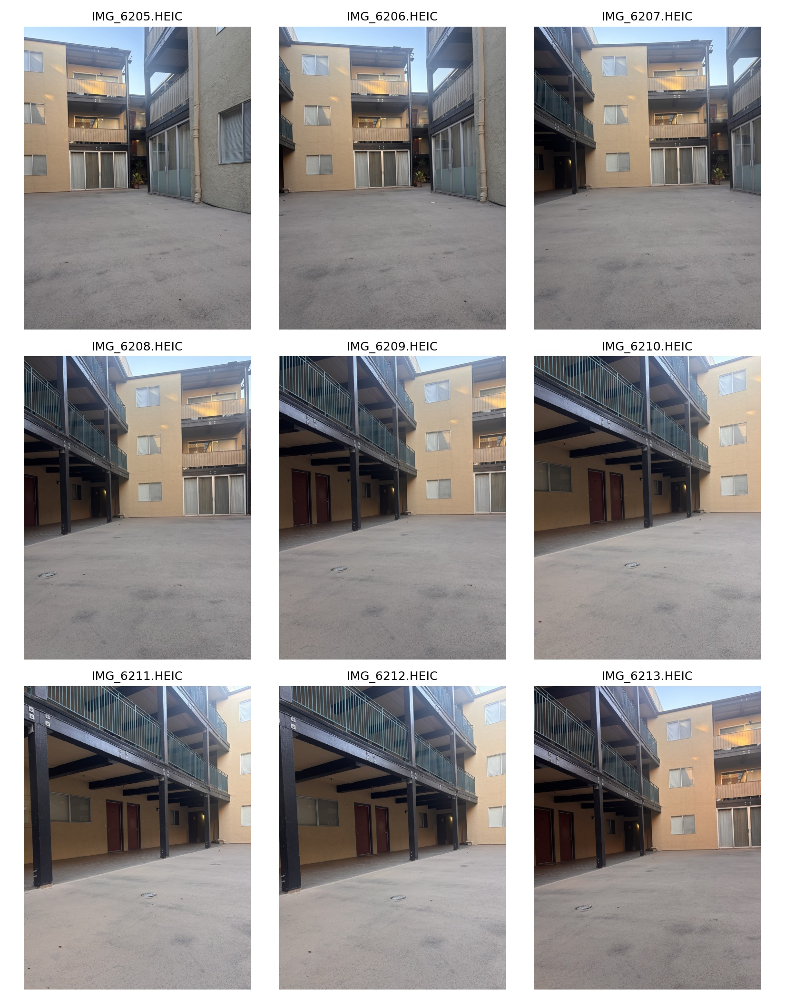
A homography maps a point (x, y) to (u, v). After multiplying by H, divide the first two coordinates by the third. Setting the last entry of H to 1 leaves eight unknowns.
H = [ h₁ h₂ h₃ ] h = [h₁ h₂ h₃ h₄ h₅ h₆ h₇ h₈]ᵀ
[ h₄ h₅ h₆ ]
[ h₇ h₈ 1 ]
xh₁ + yh₂ + h₃ − uxh₇ − uyh₈ = u
xh₄ + yh₅ + h₆ − vxh₇ − vyh₈ = v
[ x y 1 0 0 0 −ux −uy ] h = [ u ]
[ 0 0 0 x y 1 −vx −vy ] [ v ]
Stacking the equations for the nine selected pairs gives A with shape 18 × 8 and b with 18 entries. computeH solves np.linalg.lstsq(A, b, rcond=None).
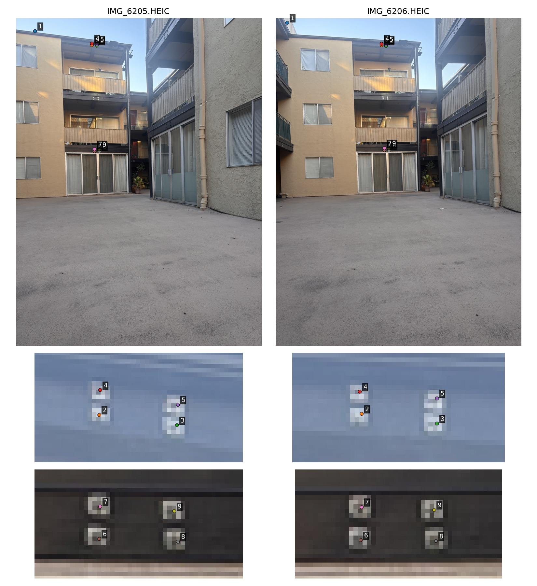
The recovered H maps IMG_6205 to IMG_6206 in the original 4284 × 5712 coordinates:
[ 2.12792260 0.39479755 -574.41169098 ] [ 0.10419489 1.80427284 -355.62301202 ] [ 0.00017492 0.00020825 1.00000000 ]
The median reprojection error is 11.55 pixels, with a maximum of 19.80. These are fitting errors. The points are clustered, so the mosaics below use more widely distributed matches.
Numerical system: A · b · Points, H, and errors
Both warps use inverse mapping. Nearest neighbor rounds the source position; bilinear interpolation weights its four neighbors. I mapped four corners of each frame to a rectangle. Target aspect ratios are chosen for display; physical dimensions were not measured.
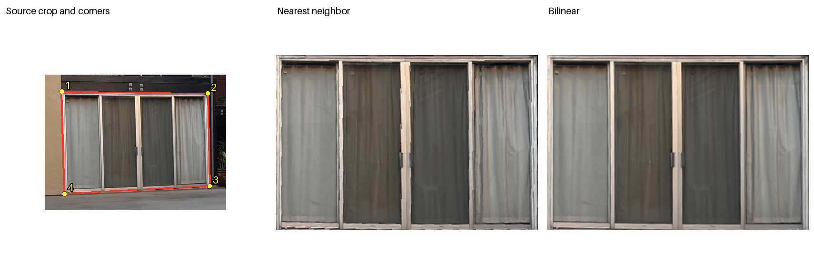
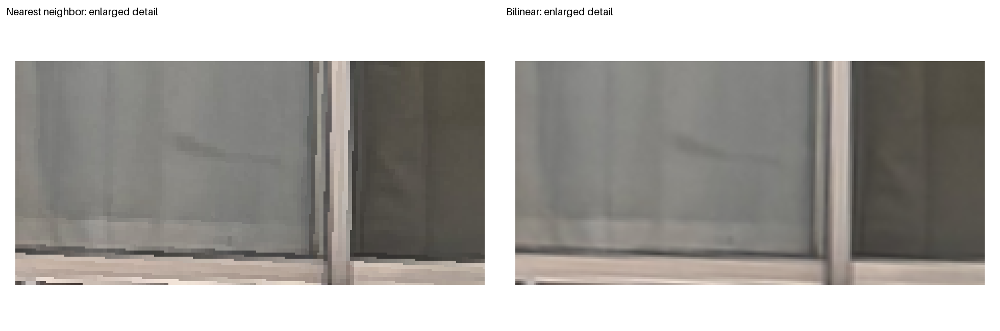
Full source · Nearest-neighbor result · Bilinear result
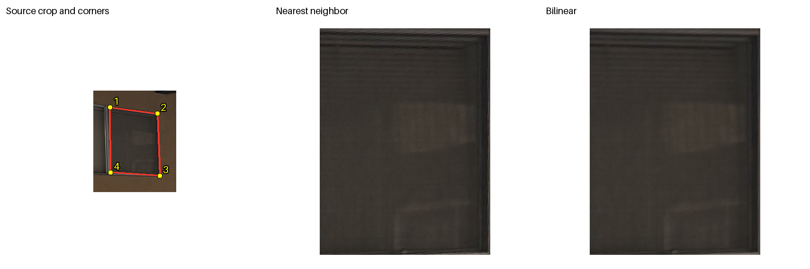
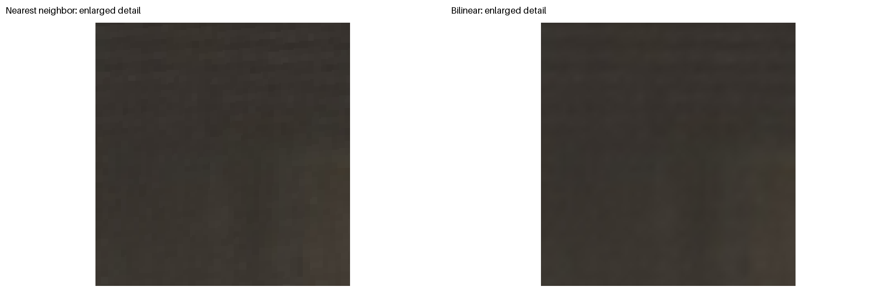
Full source · Nearest-neighbor result · Bilinear result
Nearest neighbor leaves more visible steps along edges. Bilinear is smoother, but takes longer and slightly softens detail.
| Image | Output size | Nearest | Bilinear |
|---|---|---|---|
| Sliding-door frame | 720 × 480 | 8.86 ms | 34.76 ms |
| Side window pane | 360 × 480 | 4.59 ms | 15.80 ms |
Median of seven runs after one warm-up, alternating method order, on an arm64 Mac. Both methods use NumPy; times exclude loading and saving. Corners, homographies, and timings.
The additional matches come from SIFT with a custom RANSAC filter. Each of 11 pairs has 64 saved matches. The homography solve centers and scales coordinates first, then undoes that normalization. Median fitting errors range from 0.15 to 0.60 working-image pixels.
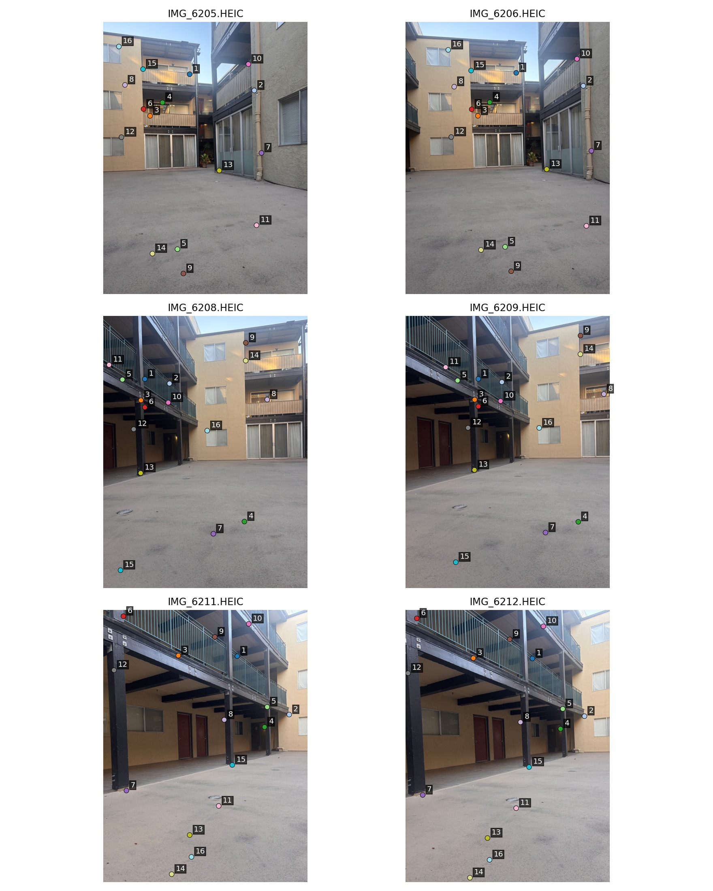
I transform the image boundaries to find the canvas, round minima down and maxima up, then translate the result into array coordinates. Each source is sampled with bilinear interpolation. Feather weights increase with distance from its edges:
I(out) = Σ wᵢ Iᵢ / Σ wᵢ
Coverage masks keep real black pixels valid. Uncovered parts of the canvas stay black. Feathering reduces seams, though small alignment errors remain around some foreground edges.
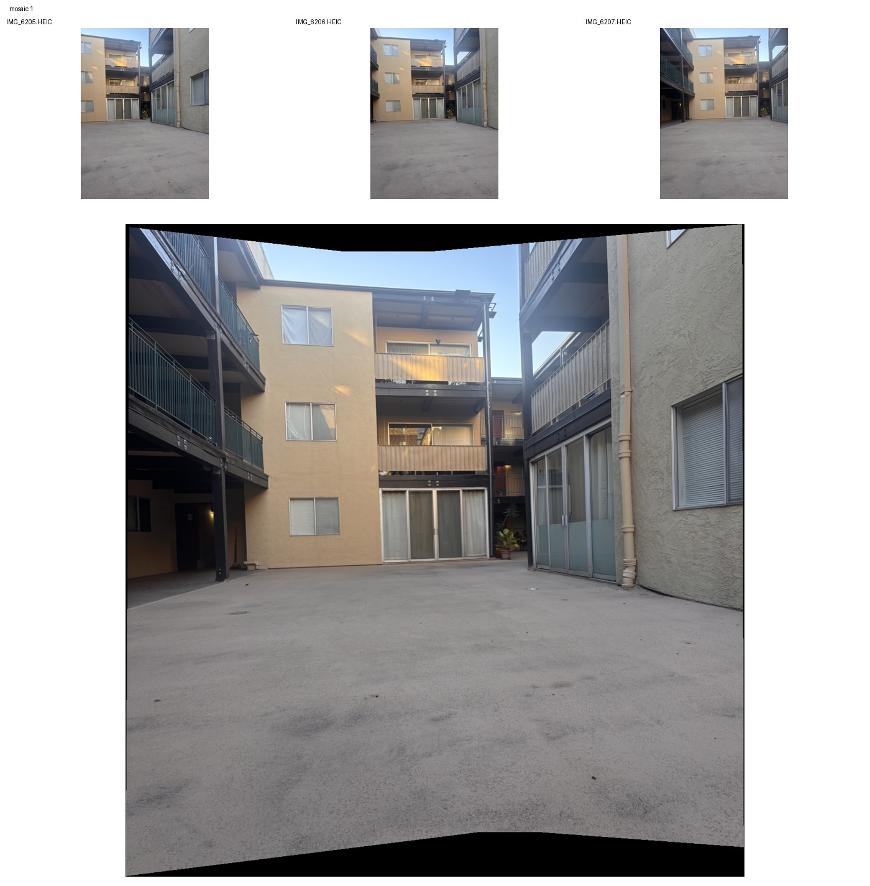
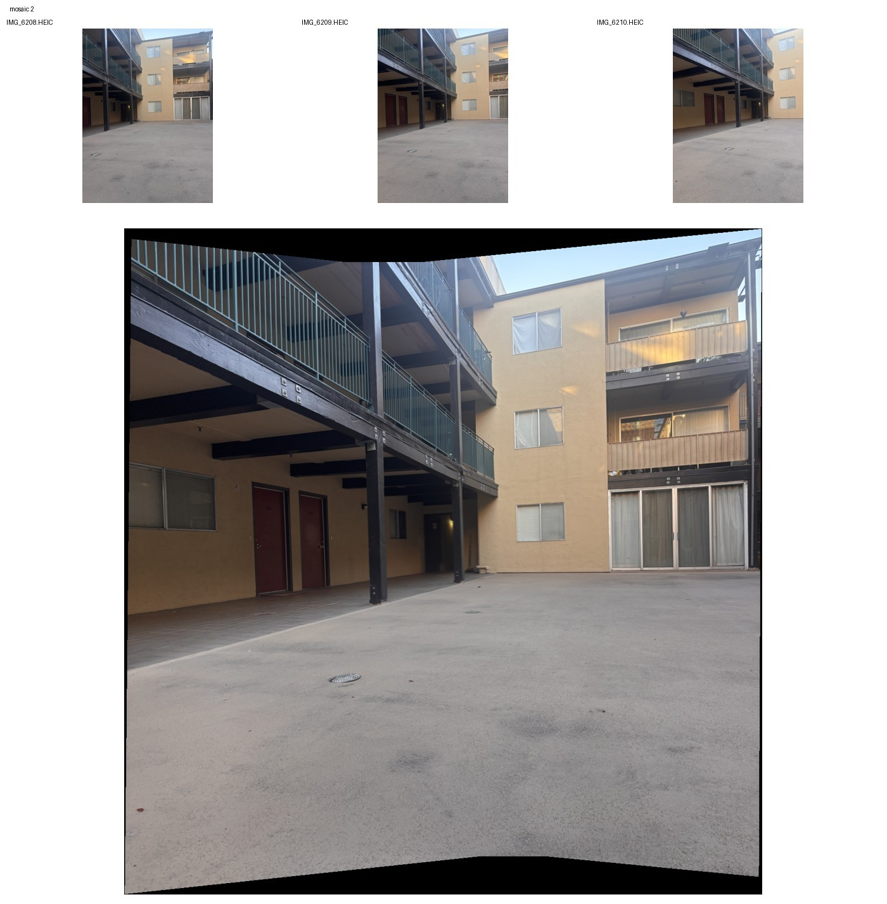
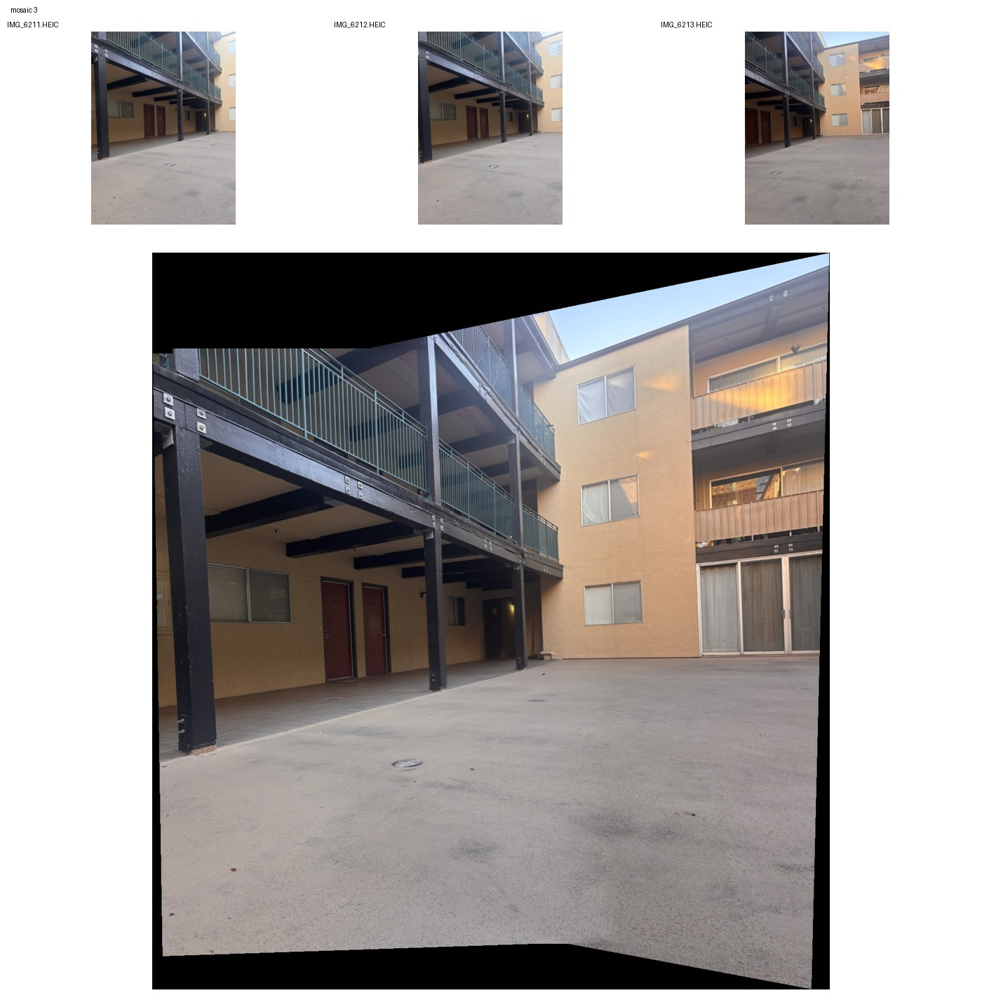
I combined all nine images on a cylinder, using IMG_6209 as the reference. For a cylinder pixel (u, v), the source sample is:
θ = u/f r = [sin θ, v/f, cos θ]ᵀ pᵢ = Hᵢ⁻¹ K r (divide by the third coordinate)
K uses focal length f and the reference image center. This samples each original source directly, then applies the same feather blend. The choice f = 900 is visual, not a camera calibration.
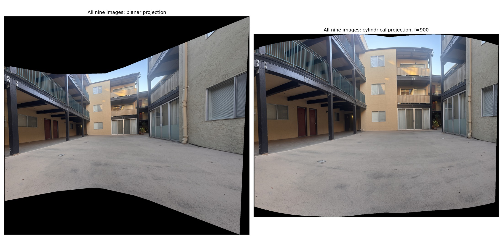
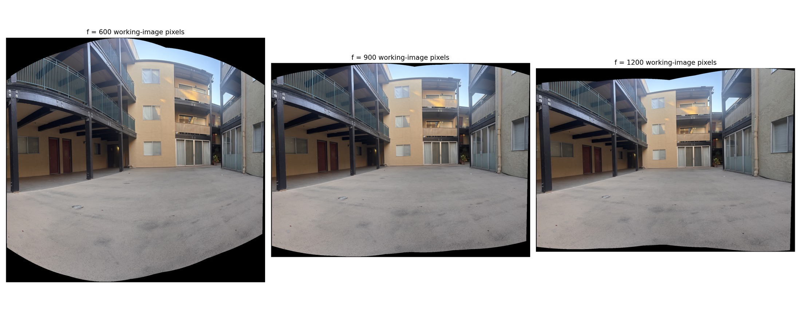
The cylindrical result reduces stretching at the sides. Smaller f gives stronger curvature. Feathering cannot fully correct parallax or errors accumulated while composing homographies.
GitHub folder · Notebook · Code ZIP · Run instructions
Implementations: Homography and inverse warps · Mosaics and cylindrical projection. Mosaic transforms and fitting errors. OpenCV is used only to prepare SIFT matches; homography fitting, RANSAC, warping, and interpolation are implemented in NumPy.